AI Academy · Level 4 · Grade 9 · Week 31 · Student lesson
Subgroup Performance
Learn to understand, design, build, test and explain AI systems responsibly.
Project: Responsible Plant Classifier
Before you start
AI-2 Week 34: calculate subgroup rates before combining them.
Plan time to read, investigate and explain. Keep predictions separate from observations.
Student lesson · 1 of 14
Your mission
Your learning target
I can calculate subgroup results with sample sizes.
I can distinguish missing evidence from equal performance.
I can report differences without assigning causes from a table.
Remember before reading
Close your notes first. A rough first answer helps us choose the right starting point; it is not a score for your ability.
Without opening the old lesson, explain one key idea from Improve Generalization. Give an example and a mistake that the idea helps you avoid.
Without opening the old lesson, explain one key idea from Learning Curves. Give an example and a mistake that the idea helps you avoid.
Without opening the old lesson, explain one key idea from Metrics Match Consequences. Give an example and a mistake that the idea helps you avoid.
After trying, check the relevant lesson or ask your teacher. Change the part of your explanation that the evidence shows was wrong.
Overall metrics can conceal uneven behavior across meaningful conditions or user groups.
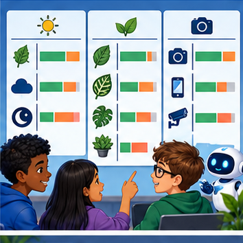
Builder name and experiment date:
Readiness for the connected explanation
What can a pooled error rate hide?
This week’s end goal
By the end, I can explain subgroup performance using a traced example and a stated limitation.
Student lesson · 2 of 14
Notice the evidence
PICTURE ENTRY
Notice → Predict → Explain
Begin with visible evidence; do not explain more than the picture and information support.
Name three visible details without interpreting them.
Predict the data, model, or evaluation decision being made.
Identify one hidden assumption that could change the result.
State what evidence would confirm or reject your prediction.
My prediction and supporting evidence:
A closer explanation
A single overall score can hide different experiences. Define relevant groups before evaluation and report counts as well as rates. This classroom exercise uses fictional sensor conditions, not personal identities. Real evaluations involving people require appropriate permissions, privacy and contextual expertise.
Use fictional classroom data throughout this investigation. Keep the task, units, reference labels and data split visible as you reason. Earlier weeks supplied the model-building process; this week examines subgroup evaluation.
Student lesson · 3 of 14
See how it works
ML MECHANISM
Input → Model → Evidence
Trace the information, fitted behavior, and evaluation proof separately.
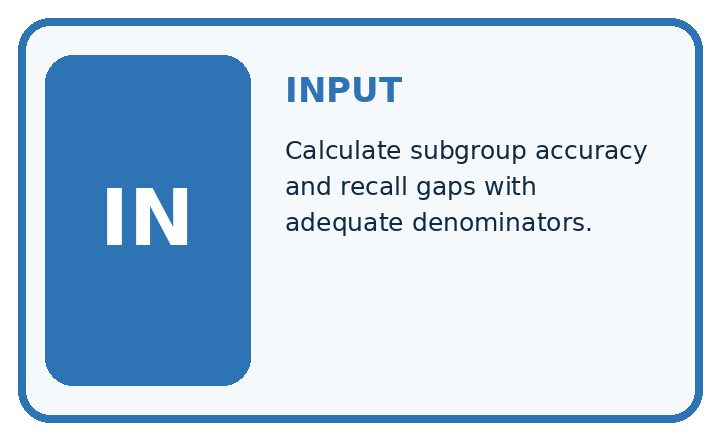
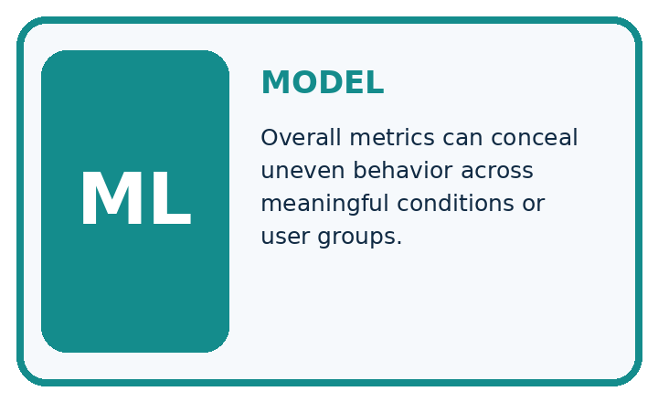
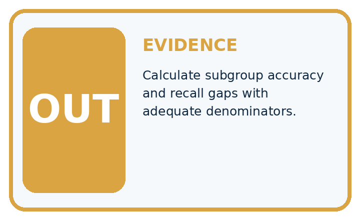
QUESTION Calculate subgroup accuracy and recall gaps with adequate denominators.
MODEL IDEA Overall metrics can conceal uneven behavior across meaningful conditions or user groups.
PROOF NEEDED Use an unseen case, visible calculation, error analysis, and a stated limitation.
Draw a fresh data → model → prediction → evaluation trace:
A closer explanation
Sensor group A has 2 errors in 20 examples and group B has 3 in 5. Error rates are 10 and 60 percent; pooled error is 5/25=20 percent. The group difference is 50 percentage points. B has only five examples, so its rate is sensitive to each individual result.
Before continuing, underline the decision rule and circle the evidence that supports the conclusion. Explain the example to a partner without replacing the counts or conditions with a stronger claim. Keep the distinction between an observed result and a proposed next step.
Connect the picture and the explanation
Point to the input, the deciding step and the result in this week’s visual. Explain the same step in ordinary words. A picture helps when you can say what each part represents.
Student lesson · 4 of 14
Compare the cases
EVALUATION DESIGN
Four Tests, Four Kinds of Evidence
A system is not understood until it survives more than one comfortable example.


NORMAL Expected data and expected behavior.
BOUNDARY Value close to a threshold, ambiguous label, or uncertain prediction.
MISSING Necessary field, label, source, or measurement is unavailable.
SHIFTED New lighting, species, device, subgroup, or time condition.
Which case most threatens today's claim, and why?
Change one thing in the pictured case
Change: Shade gains5 new cases with no errors.
Prediction: Shade error becomes3/10=30%; pooled error becomes5/30≈16.7%.
Reason: Extra evaluated cases change denominators; existing errors have not disappeared.
Student lesson · 5 of 14
Words that unlock the idea
VOCABULARY
Words You Can Calculate and Defend
A definition matters when it lets you interpret a new dataset, model, or result.
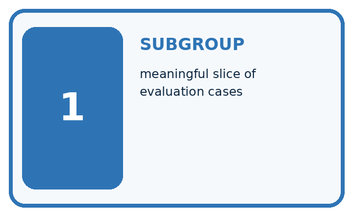
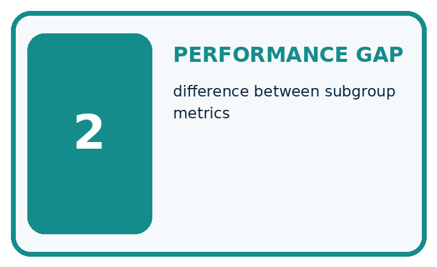
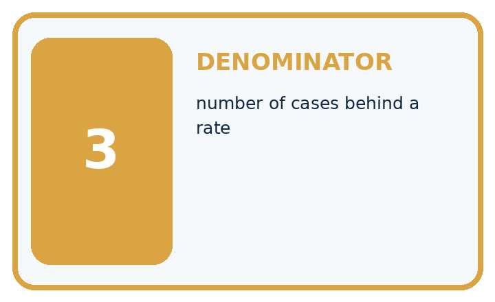
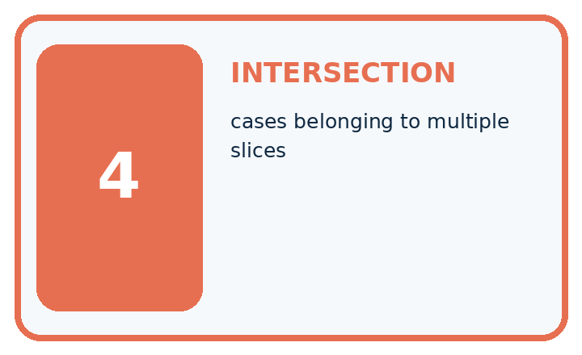
| Term | Precise meaning | My ML example |
|---|---|---|
| subgroup | meaningful slice of evaluation cases | |
| performance gap | difference between subgroup metrics | |
| denominator | number of cases behind a rate | |
| intersection | cases belonging to multiple slices |
Repair the claim using a definition, calculation, or test record:
Words used in the closer explanation
| Word | Meaning |
|---|---|
| Subgroup | A defined subset of the evaluated examples |
| Disaggregation | Reporting results separately for defined groups |
| Coverage | Which groups and conditions are represented |
| Disparity | An observed difference between group results |
Student lesson · 6 of 14
Follow a worked example
WORKED EVIDENCE
Reason Step by Step
Predict first. Then check each step. A correct answer without visible evidence cannot be audited.
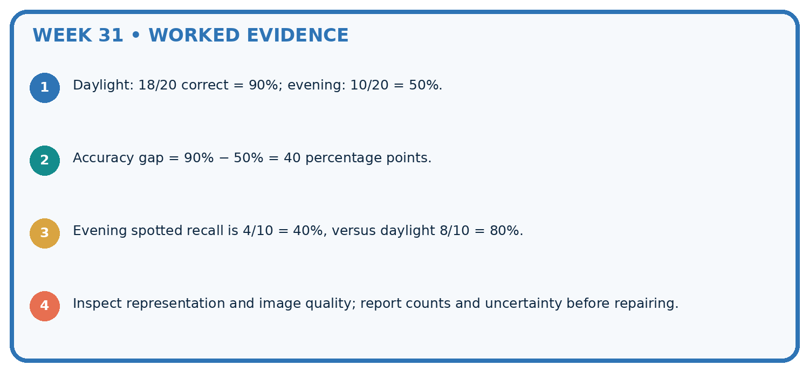
STEP 1 Daylight: 18/20 correct = 90%; evening: 10/20 = 50%.
STEP 2 Accuracy gap = 90% − 50% = 40 percentage points.
STEP 3 Evening spotted recall is 4/10 = 40%, versus daylight 8/10 = 80%.
STEP 4 Inspect representation and image quality; report counts and uncertainty before repairing.
Recalculate, retrace, or restate the evidence independently:
A closer explanation
Subgroup evaluation at a glance
Learn from the worked case
Cover the result before checking it. Say what is given, choose the procedure, and follow one step at a time. Then uncover the result and explain your first mismatch. Ask why a step is allowed, not only what number it produces.
A pictorial worked case: Subgroup Performance
Calculate subgroup and pooled error rates without letting the larger group hide a gap.
The facts we will use
Group Sun: 2 errors in20 photos; Shade: 3 errors in5. Same error definition; related plant views are documented.
All inputs and outcomes in this worked example are invented classroom data; no real model run is claimed.
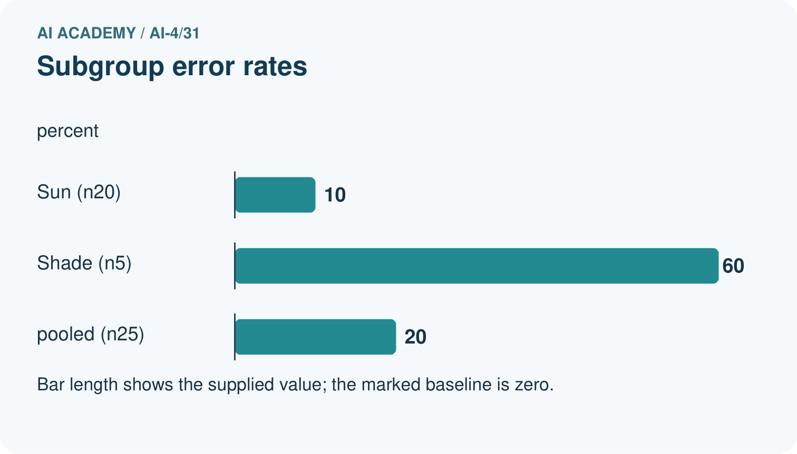
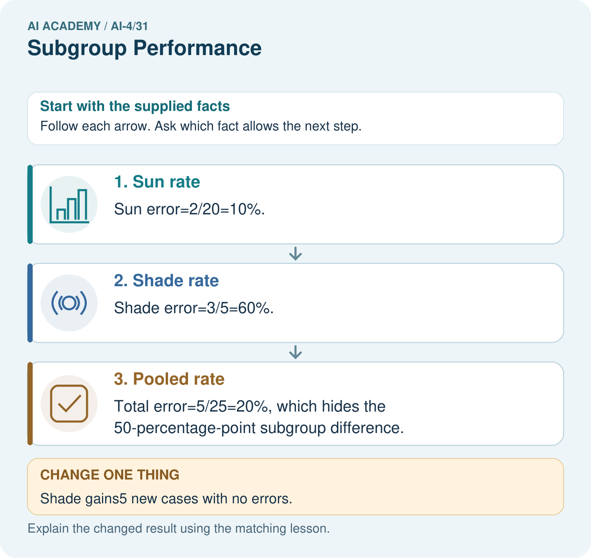
Read the picture one step at a time
Why this result follows
Read the picture in order. Total error=5/25=20%, which hides the 50-percentage-point subgroup difference. The arrows show which recorded input or intermediate result each decision uses. Explain the deciding step aloud before checking the changed case; pointing to the final answer alone does not show how it follows.
What this example does not establish
Small subgroup samples have high variability. An observed gap does not by itself establish discrimination or a causal explanation.
Student lesson · 7 of 14
Find and repair a mistake
ERROR DETECTIVE
Compare → Diagnose → Repair
Do not patch the answer. Find the earliest unsupported assumption, data problem, or experiment error.
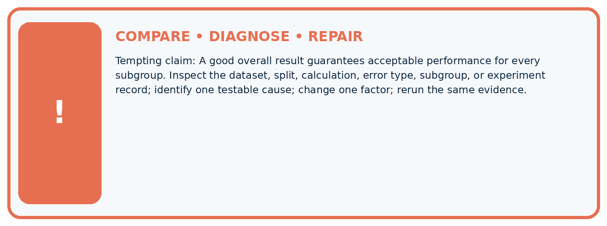
| Evidence record | Expected | Actual | Likely cause / next test |
|---|---|---|---|
| normal case | passes | ||
| boundary case | defined behavior | ||
| missing case | safe fallback | ||
| shifted case | measured limit |
Diagnose one cause and name the cleanest next experiment:
A closer explanation
Equal error rates alone do not establish fairness, and unequal rates alone do not identify discrimination or a cause. Groups may differ in base rates, label quality or conditions. Use results to ask better questions and plan review rather than label a group as inherently difficult.
Student lesson · 8 of 14
Practise together
ML STUDIO
Specify Before You Run
A trustworthy result can be reproduced from the recorded data, code, settings, and evaluation rule.

Experiment record
QUESTION + intended use + success threshold
DATA version + grouped split + leakage check
CODE/preprocessing + features + model + settings + seed
METRICS + positive class + units + denominators
PREDICTIONS + errors + subgroup slices + limitations
HUMAN reviewer + release, revise, limit, or stop decision
Write the minimum record needed to reproduce today's result:
A closer explanation
Choose group definitions for a reason connected to use and possible harm. Retain error types, reference-label quality and sampling method. Avoid searching many groupings merely to find a dramatic or reassuring number. Report exploratory checks as exploratory.
Practise with less help: Check sensitivity
Use workbook W2 for the connected example “Subgroup evaluation”. First fill the input and rule boxes. Try the middle steps before asking for a hint. After a hint, try the next step yourself.
| Plan | Do | Check |
|---|---|---|
| What is given? Which rule or procedure applies? | Record each intermediate step. | Does the result follow? What remains unknown? |
Explain your trace to a partner. Your partner points to one step to check. Swap roles on the next case. Each person writes their own explanation.
Check your reasoning
Use the worked case for Subgroup evaluation. Proposed explanation: “A final answer is enough”. Decide whether this explanation is supported. Point to the step or supplied fact that decides; explain your repair if needed.
Answer on your own before discussion. If you are unsure, say which step you need help with.
Explain the picture
Why should the report retain subgroup rates alongside the total? Point to the relevant step in the picture, then write the changed result and the rule or evidence that supports it.
This is supported practice. Keep the separately named independent case for an attempt before feedback.
Student lesson · 9 of 14
Run the investigation
EVIDENCE LAB
Predict → Run → Calculate → Interpret
Keep the test conditions fixed, record every result, and change only one planned factor.
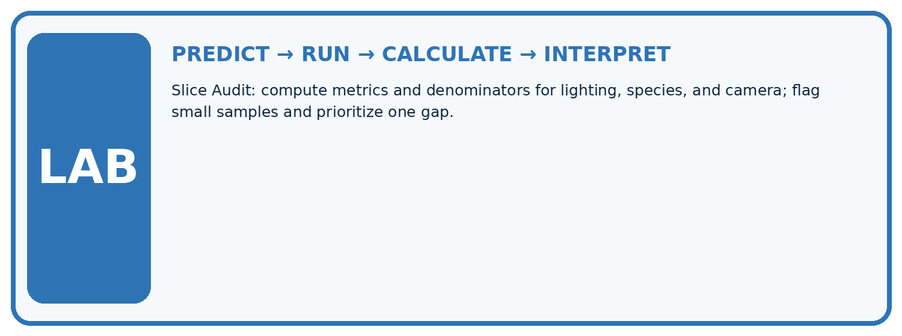
1. Write the hypothesis and expected evidence before running.
2. Slice Audit: compute metrics and denominators for lighting, species, and camera; flag small samples and prioritize one gap.
3. Run one normal, one boundary, one missing, and one shifted case.
4. Calculate the metric from raw counts or row-level errors.
5. Interpret what changed, what did not, and what remains unsafe or unknown.
| Case | Prediction | Actual | Calculation / evidence | Meaning / next test |
|---|---|---|---|---|
| Normal | ||||
| Boundary | ||||
| Missing | ||||
| Shifted |
Plan → try → check
Before trying: what do I expect, and why? While trying: which step could first go wrong? Afterwards: what did I actually observe, and what should change? Keep “not run” if you only traced the procedure.
Student lesson · 10 of 14
Build your understanding
MASTERY
From Knowing the Word to Owning the Idea
Move upward only when you can produce evidence without copying the example.

DEFINE Use all four terms precisely: subgroup, performance gap, denominator, intersection.
CALCULATE Reproduce the worked evidence with units and denominator.
TRACE Explain the data, code or decision path.
DIAGNOSE A good overall result guarantees acceptable performance for every subgroup.
TRANSFER Solve a fresh dataset or model case.
IMPROVE Change one cause and rerun fixed evidence.
DEFEND State intended use, metric, limitation, and human responsibility.
Student lesson · 11 of 14
Connect your project
CUMULATIVE PROJECT
Responsible Plant Classifier
Every week adds one reviewable artifact to the same evidence-based capstone.
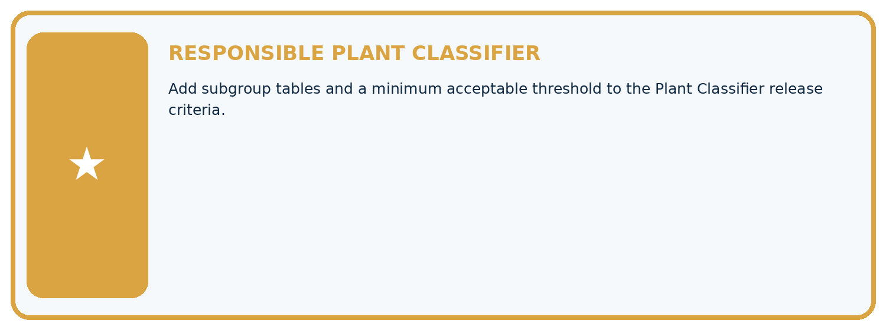
Which requirement or risk does this artifact address?
Which dataset, split, code, and metric version does it use?
What normal and shifted cases were tested?
What remains uncertain or weak?
What decision still belongs to a teacher or qualified human?
My evidence-linked project decision:
Evidence for your project
For your Responsible Plant Classifier, save the input, procedure, observed result and limitation of this check. Label this worked example as practice; use a different, previously unreviewed case when checking independent understanding.
Student lesson · 12 of 14
Show what you know
INDEPENDENT PROOF
Explain • Calculate • Transfer • Defend
Complete this with a fresh case after guided practice and compare it with the mastery criteria.
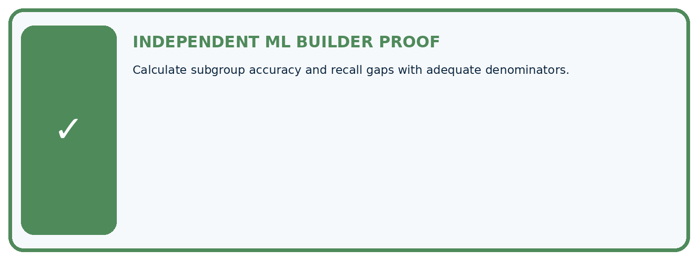
□ Define the task, feature/target roles, and intended-use boundary.
□ Show the calculation, code trace, or experiment record.
□ Test a normal case and one revealing boundary, missing, or shifted case.
□ Diagnose one failure without changing several factors at once.
□ Name a limitation, fairness concern, and the human-review action.
Independent evidence and defense:
My level: □ Not yet □ With one hint □ Independently □ I can teach and defend it
Student lesson · 13 of 14
Study a complete case
Week 31 Worked case
Use the supplied details to practise the weekly concept before attempting the independent question. This case extends the illustrated lesson.
The situation
A has18/20 correct; B has6/10.
The question
Compute subgroup results and evidence limits.
Worked explanation
90% versus60%, gap30 percentage points. Report denominators and investigate collection/label differences without assuming an inherent group cause.
Explain it in your own words
Which detail supports the answer, and why does it matter?
Trace the supplied case visually
Report subgroup denominators with rates
| Evidence or stage | Value or result |
|---|---|
| Group A | 18/20 |
| Group B | 6/10 |
A has18/20 correct; B has6/10.
Compute subgroup results and evidence limits.
90% versus60%, gap30 percentage points. Report denominators and investigate collection/label differences without assuming an inherent group cause.
Student lesson · 14 of 14
Try a new case independently
Independent case: Apply independently
Groups X 1 error/10 and Y 2/4: calculate separate and pooled rates, then state one limit.
Attempt this case before feedback. Record any help. Earlier examples below are further practice; a case already practised with feedback cannot establish fresh transfer.
Week 31 Independent application
Close the worked explanation. Apply the idea to this different question without copying.
Accuracy is 18/20 in bright light and 6/10 in dim light. Compute both rates and the percentage-point gap.
My answer, with a trace, calculation or supporting evidence
Create and test
Change one relevant detail. Predict the result before testing. Include a boundary or missing-information case when it helps reveal a limit.
My changed input and expected result
Connect to your project
Add subgroup tables and a minimum acceptable threshold to the Plant Classifier release criteria.
The evidence I will keep
Your teacher has the independent answer and scoring criteria. Complete the matching workbook week to keep your practice evidence together.
Transfer practice from the original programme
Device A gets 18/20 correct; B gets 6/10. Compute overall accuracy and the subgroup gap. What causal claim is not supported?
Use feedback to improve
Attempt the independent case before hints. Record whether you worked alone, used a hint or followed a model. After feedback, fix the first unsupported step and explain why it changed. A later check uses a changed case, not a copied answer.